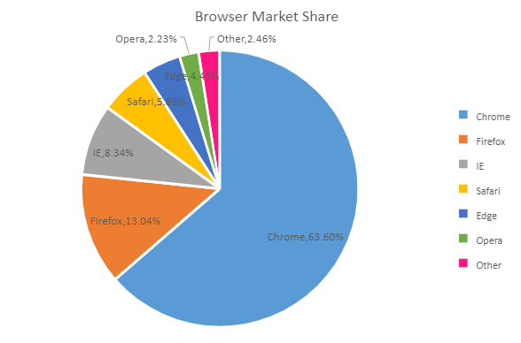
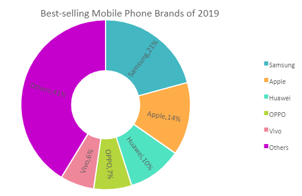

A pie chart is extensively used to display the size of each item in a single data series in proportion to a total quantity.Data points are shown as a percentage of the whole pie. This chart is ideal when you want to visualize data in terms of percentage or share.
The data arranged in columns or rows of a worksheet can be plotted in a pie chart. Typically, a pie chart is similar to a circle divided in small sectors representing fractions of the contribution of each category to the whole. These charts generally display only one group of data.
SpreadJS supports the following types of pie chart. In the examples shown below, the browser market share (in percentage)for different browsers is depicted in different types of pie charts.
This chart displays a single data series in a circle-type structure, with each sector representing a different category.
An image of the pie chart is shown below:

Using Code
This code shows how to add a pie chart in the spreadsheet along with customization of some of the chart elements.
| JavaScript |
Copy Code
|
|---|---|
// initializing Spread var spread = new GC.Spread.Sheets.Workbook(document.getElementById('ss'), { sheetCount: 3 }); // get the activesheet var activeSheet = spread.getSheet(0); //prepare data for chart var dataArray = [ ["", 'Chrome', 'Firefox', 'IE', 'Safari', 'Edge', 'Opera', 'Other'], ["2014", 0.4966, 0.1801, 0.2455, 0.0470, 0.0, 0.0150, 0.0158], ["2015", 0.5689, 0.1560, 0.1652, 0.0529, 0.0158, 0.0220, 0.0192], ["2016", 0.6230, 0.1531, 0.1073, 0.0464, 0.0311, 0.0166, 0.0225], ["2017", 0.6360, 0.1304, 0.0834, 0.0589, 0.0443, 0.0223, 0.0246] ]; activeSheet.setArray(0, 0, dataArray); // Add Pie Chart var chart = activeSheet.charts.add('PieChart', GC.Spread.Sheets.Charts.ChartType.pie, 0, 50, 600, 400, "A1:H2"); var dataLabels = chart.dataLabels(); dataLabels.showValue = true; dataLabels.showSeriesName = false; dataLabels.showCategoryName = true; dataLabels.format = "0.00%"; var dataLabelPosition = GC.Spread.Sheets.Charts.DataLabelPosition; dataLabels.position = dataLabelPosition.bestFit; chart.dataLabels(dataLabels); var title = chart.title(); title.text = "Browser Market Share"; title.fontSize = 18; chart.title(title); chart.legend({ position: GC.Spread.Sheets.Charts.LegendPosition.right }); var seriesItem = chart.series().get(0); seriesItem.backColor = 'rgb(91, 155, 213),rgb(237, 125, 49),rgb(165, 165, 165),rgb(255, 192, 0),rgb(68, 114, 196),rgb(112, 173, 71),rgb(255,20,128)'; seriesItem.border.width = 3; chart.series().set(0, seriesItem); // Add Doughnut Chart var chart = activeSheet.charts.add('DoughnutChart', GC.Spread.Sheets.Charts.ChartType.doughnut, 0, 100, 600, 320, "A1:H5"); var series = chart.series().get(); for (var i = 0; i < series.length; i++) { var seriesItem = series[i]; seriesItem.backColor = 'rgb(91, 155, 213),rgb(237, 125, 49),rgb(165, 165, 165),rgb(255, 192, 0),rgb(68, 114, 196),rgb(112, 173, 71),rgb(255,20,128)'; chart.series().set(i, seriesItem); } chart.legend({ position: GC.Spread.Sheets.Charts.LegendPosition.right }); var title = chart.title(); title.text = "Browser Market Share"; title.fontSize = 18; chart.title(title); |
|
This chart can display multiple data series concurrently, with each ring depicting a single data series.
When you insert a doughnut chart in the spreadsheet, its hole size is in default size. You can change the hole size by setting the value for the doughnutHoleSize property ranging between 0 and 0.9. With this property, users can display wider slices in doughnut chart to accommodate data labels that could be category names, values, percentages etc.
An image of the doughnut chart is shown below:

Using Code
This code shows how to add a doughnut chart in the spreadsheet along with customization of some of the chart elements.
| JavaScript |
Copy Code
|
|---|---|
<script> $(document).ready(function () { // initializing Spread var spread = new GC.Spread.Sheets.Workbook(document.getElementById('ss'), { sheetCount: 3 }); // get the activesheet var activeSheet = spread.getSheet(0); //prepare data for chart var dataArray = [ ["", 'Samsung', 'Apple', 'Huawei', 'OPPO', 'Vivo', 'Others'], ["Sales", 321, 215, 160, 112, 100, 638] ]; // set data for chart activeSheet.setArray(0, 0, dataArray); // Add Doughnut Chart var chart = activeSheet.charts.add('DoughnutChart', GC.Spread.Sheets.Charts.ChartType.doughnut, 10, 80, 600, 320, "A1:G2"); var series = chart.series().get(); for (var i = 0; i < series.length; i++) { var seriesItem = series[i]; seriesItem.backColor = 'rgb(91, 155, 213),rgb(237, 125, 49),rgb(165, 165, 165),rgb(255, 192, 0),rgb(68, 114, 196),rgb(112, 173, 71),rgb(255,20,128)'; chart.series().set(i, seriesItem); } // set the doughnut HoleSize series.doughnutHoleSize = 0.4; chart.series().set(0, series); // show datalabels var dataLabels = chart.dataLabels(); dataLabels.showValue = false; dataLabels.showSeriesName = false; dataLabels.showCategoryName = true; dataLabels.showPercentage = true; var dataLabelPosition = GC.Spread.Sheets.Charts.DataLabelPosition; dataLabels.position = dataLabelPosition.Center; chart.dataLabels(dataLabels); // set series backcolor var s = chart.series().get(0); //s.backColor = "accent 1 0,accent 2 0,accent 3 0,accent 4 0, accent 5 0, accent 6 0"; s.backColor = "#43B7C2, #FFAD48, #50E3C2, #B5D63D, #EF879B, #C600CC"; chart.series().set(0, s) // show legends chart.legend({ position: GC.Spread.Sheets.Charts.LegendPosition.right }); var title = chart.title(); title.text = "Best-selling Mobile Phone Brands of 2019"; title.fontSize = 18; chart.title(title); }); </script> |
|